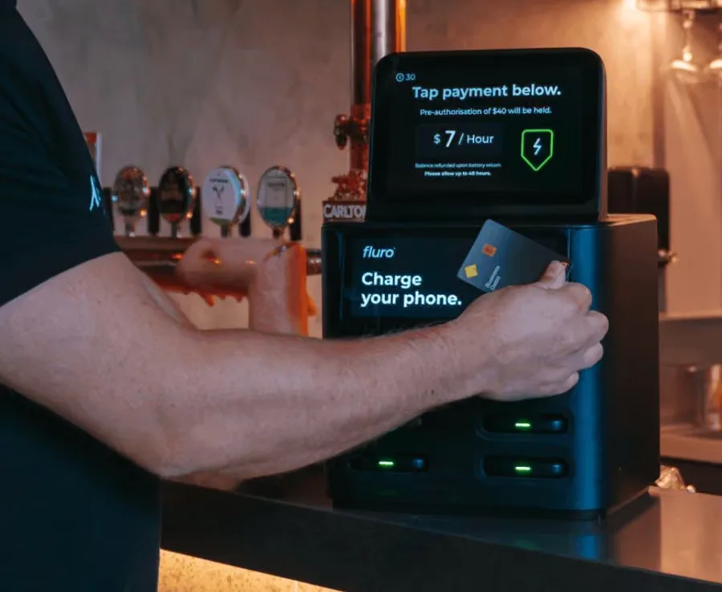
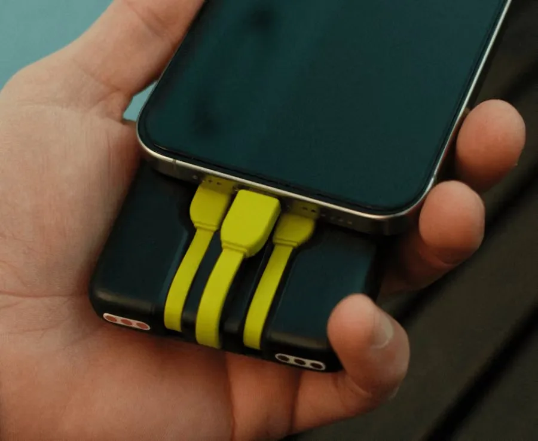
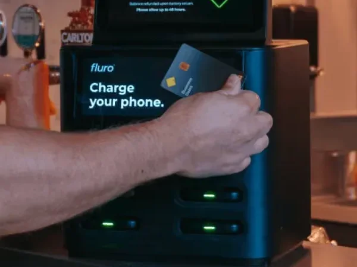
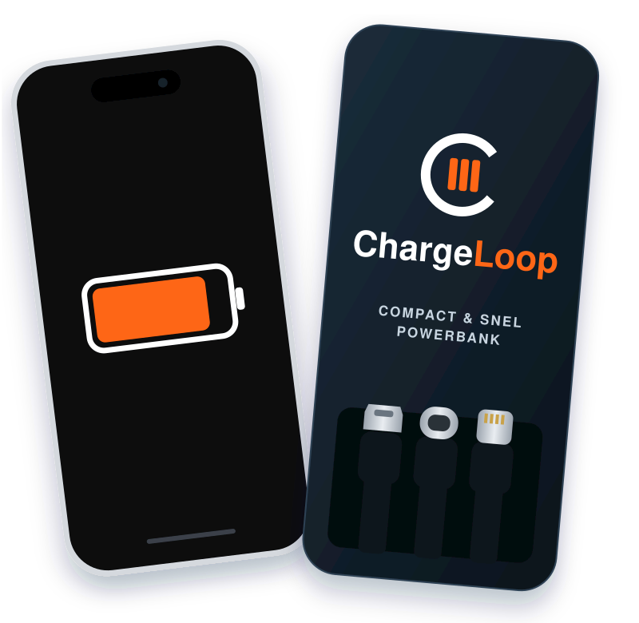
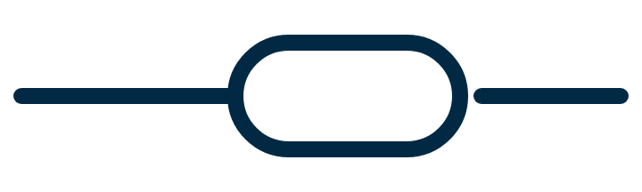
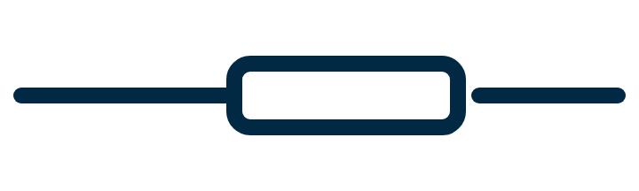
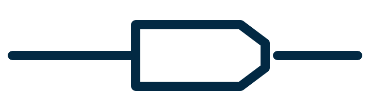

In drie handelingen
weer verbonden
Van lege batterij naar volle telefoon, zonder iets te installeren.

Tap
Houd je pas of telefoon tegen de terminal. Daarna pak je een volle powerbank uit het station.

Charge
Sluit je telefoon aan op de kabel die past. Onze powerbanks zijn snelladers: een volle telefoon in ongeveer 60 minuten.

Go
Neem hem mee en zet hem later terug in een ChargeLoop-station. Niet per se het station waar je hem pakte.
€3,00 per uur, max. €7,50 per dag, €30 borg die je terugkrijgt. Meer over de prijs
Geen app.
Geen account.
Gewoon tappen.
Je hebt al een pinpas of telefoon bij je. Meer is er niet nodig om een powerbank te pakken.
- Download de app
- Maak een account aan
- Scan de QR-code
- Koppel je betaalmethode
- Accepteer de voorwaarden
Houd je pas of telefoon tegen de terminal. Klaar, je kunt laden.
1 handeling
Geschikt voor iedere telefoon
Je hoeft geen kabel mee te nemen of te lenen. Alle drie de aansluitingen zitten vast aan de powerbank, dus er past er altijd één. En omdat de powerbank compact is, past hij zo in je broekzak of tas.



Waar kun jij opladen?
We zijn nog jong en groeien snel. Kies een station op de kaart of in de lijst.
De getoonde locaties zijn voorbeelden. Echte stations voeg je toe in de beheeromgeving.
Perfect voor iedere locatie
Een station hoort op elke plek waar mensen even blijven hangen. Heb jij zo'n plek? Dan past het in jouw zaak.
Daarom kies je ChargeLoop
Gemiddeld een volle telefoon
Altijd een kabel die past
Alleen je pas of telefoon
Overal in te leveren
Veelgestelde vragen
Een paar antwoorden vooraf. Staat jouw vraag er niet bij, kijk dan bij alle vragen of stuur ons een berichtje.